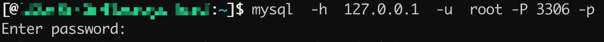
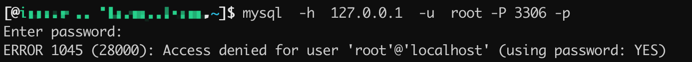
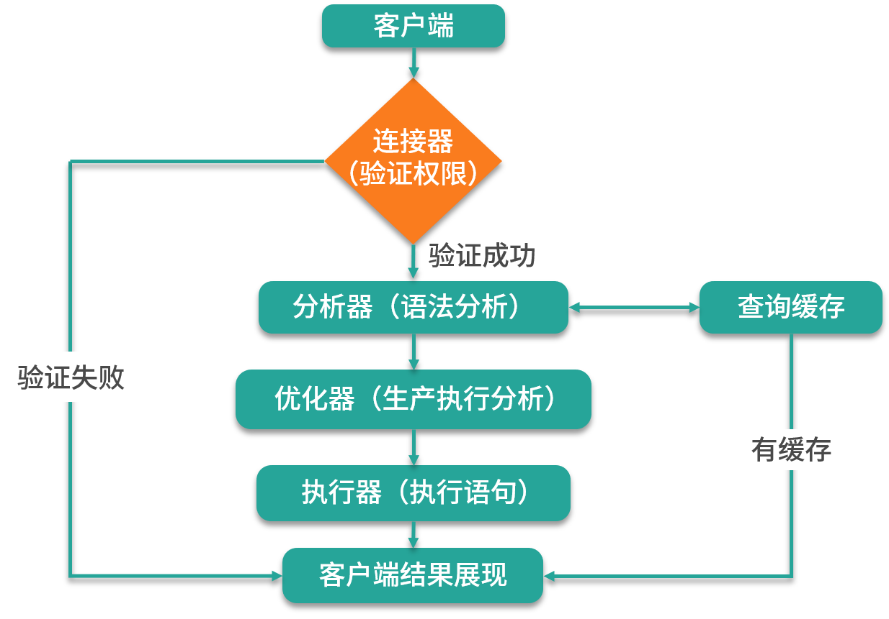
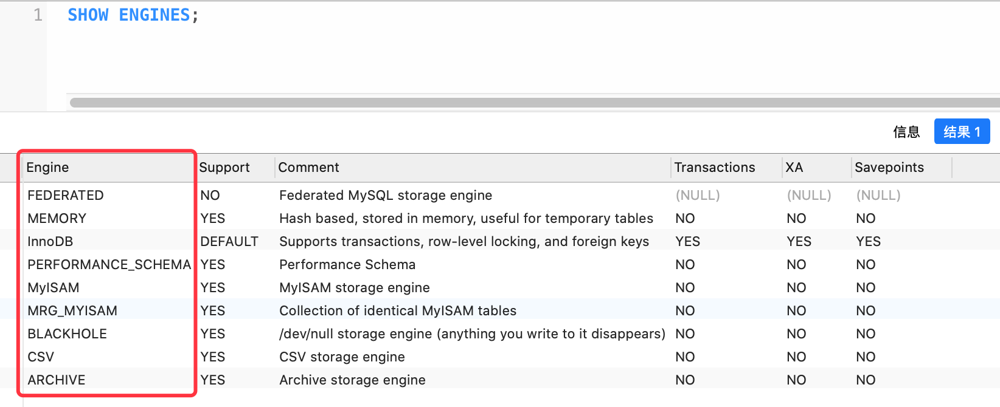

数据库是 Java 程序员面试必问的知识点之一，它和 Java 的核心面试点共同组成了一个完整的技术面试。而数据库一般泛指的就是 MySQL，因为 MySQL 几乎占据了数据库的半壁江山，即使有些公司没有使用 MySQL 数据库，如果你对 MySQL 足够精通的话，也是会被他们录取的。因为数据库的核心与原理基本是相通的，所以有了 MySQL 的基础之后，再去熟悉其他数据库也是非常快的，那么接下来的几个课时就让我们好好的学习一下 MySQL。
我们本课时的面试题是，MySQL 是如何运行的？说一下它有哪些引擎？
典型回答
MySQL 的执行流程是这样的，首先客户端先要发送用户信息去服务器端进行授权认证。如果使用的是命令行工具，通常需要输入如下信息：
mysql -h 主机名(IP) -u 用户名 -P 端口 -p
其中：
- h 表示要连接的数据库服务器的主机名或者 IP 信息；
- u 表示数据库的用户名称；
- P 表示数据库服务器的端口号，
- 小写的 -p 表示需要输入数据库的密码。
具体使用示例，如下图所示：

当输入正确密码之后可以连接到数据库了，如果密码输入错误，则会提示“Access denied for user ‘xxx’@’xxx’ (using password: YES)”密码错误信息，如下图所示：

当连接服务器端成功之后就可以正常的执行 SQL 命令了，MySQL 服务器拿到 SQL 命令之后，会使用 MySQL 的分析器解析 SQL 指令，同时会根据语法分析器验证 SQL 指令，查询 SQL 指令是否满足 MySQL 的语法规则。如果不支持此语法，则会提示“SQL syntax”语法错误信息。
当分析器验证并解析 SQL 命令之后，会进入优化器阶段，执行生成计划，并设置相应的索引；当上面的这些步骤都执行完之后，就进入了执行器阶段，并开始正式执行 SQL 命令。同样在执行命令之前，它会先对你的执行命令进行权限查询，看看是否有操作某个表的权限，如果有相应的权限，执行器就去调用 MySQL 数据库引擎提供的接口，执行相应的命令；如果是非查询操作会记录对应的操作日志，再命令执行完成之后返回结果给客户端，这就是整个 MySQL 操作的完整流程。
需要注意的是，如果执行的是 select 语句并且是 MySQL 8.0 之前的版本的话，则会去 MySQL 的查询缓存中查看之前是否有执行过这条 SQL；如果缓存中可以查到，则会直接返回查询结果，这样查询性能就会提升很高。
整个 SQL 的执行流程，如下图所示：

我们可以使用 SHOW ENGINES 命令来查看 MySQL 数据库使用的存储引擎，如下图所示：

常用的数据库引擎有 InnoDB、MyISAM、MEMORY 等，其中 InnoDB 支持事务功能，而 MyISAM 不支持事务，但 MyISAM 拥有较高的插入和查询的速度。而 MEMORY 是内存型的数据库引擎，它会将表中的数据存储到内存中，因为它是内存级的数据引擎，因此具备最快速的查询效率，但它的缺点是，重启数据库之后，所有数据都会丢失，因为这些数据是存放在内存中的。
考点分析
此面试题考察的是面试者对 MySQL 基础知识的掌握程度，以及对于 MySQL 引擎的了解程度，这些都是属于 MySQL 最核心的原理之一，也是面试中常见的面试问题，它一般作为数据库面试题的开始题目，和此面试题相关的面试点还有以下几个：
- 查询缓存在什么问题？
- 如何选择数据库的引擎？
- InnoDB 自增索引的持久化问题。
知识扩展
1.查询缓存的利弊
MySQL 8.0 之前可以正常的使用查询缓存的功能，可通过“SHOW GLOBAL VARIABLES LIKE ‘query_cache_type’”命令查询数据库是否开启了查询缓存的功能，它的结果值有以下三项：
- OFF，关闭了查询缓存功能；
- ON，开启了查询缓存功能；
- DEMAND，在 sql 语句中指定 sql_cache 关键字才会有查询缓存，也就是说必须使用 sql_cache 才可以把该 select 语句的查询结果缓存起来，比如“select sql_cache name from token where tid=1010”语句。
开启和关闭查询缓存可以通过修改 MySQL 的配置文件 my.cnf 进行修改，它的配置项如下：
query_cache_type = ON
注意：配置被更改之后需要重启 MySQL 服务才能生效。
查询缓存的功能要根据实际的情况进行使用，建议设置为按需缓存（DEMAND）模式，因为查询缓存的功能并不是那么好用。比如我们设置了 query_cache_type = ON，当我们好不容易缓存了很多查询语句之后，任何一条对此表的更新操作都会把和这个表关联的所有查询缓存全部清空，那么在更新频率相对较高的业务中，查询缓存功能完全是一个鸡肋。因此，在 MySQL 8.0 的版本中已经完全移除了此功能，也就是说在 MySQL 8.0 之后就完全没有查询缓存这个概念和功能了。
2.如何选择数据库引擎
选择数据库引擎要从实际的业务情况入手，比如是否需要支持事务？是否需要支持外键？是否需要支持持久化？以及是否支持地理位置存储以及索引等方面进行综合考量。
我们最常用的数据库引擎是 InnoDB，它是 MySQL 5.5.5 之后的默认引擎，其优点是支持事务，且支持 4 种隔离级别。
读未提交：也就是一个事务还没有提交时，它做的变更就能被其他事务看到。
读已提交：指的是一个事务只有提交了之后，其他事务才能看得到它的变更。
可重复读：此方式为默认的隔离级别，它是指一个事务在执行过程中（从开始到结束）看到的数据都是一致的，在这个过程中未提交的变更对其他事务也是不可见的。
串行化：是指对同一行记录的读、写都会添加读锁和写锁，后面访问的事务必须等前一个事务执行完成之后才能继续执行，所以这种事务的执行效率很低。
InnoDB 还支持外键、崩溃后的快速恢复、支持全文检索（需要 5.6.4+ 版本）、集群索引，以及地理位置类型的存储和索引等功能。
MyISAM 引擎是 MySQL 原生的引擎，但它并不支持事务功能，这也是后来被 InnoDB 替代为默认引擎的主要原因。MyISAM 有独立的索引文件，因此在读取数据方面的性能很高，它也支持全文索引、地理位置存储和索引等功能，但不支持外键。
InnoDB 和 MyISAM 都支持持久化，但 MEMORY 引擎是将数据直接存储在内存中了，因此在重启服务之后数据就会丢失，但它带来的优点是执行速度很快，可以作为临时表来使用。
我们可以根据实际的情况设置相关的数据库引擎，还可以针对不同的表设置不同的数据引擎，只需要在创建表的时候指定 engine=引擎名称即可，SQL 代码如下：
1 | create table student( |
3.InnoDB 自增主键
在面试的过程中我们经常看到这样一道面试题：
在一个自增表里面一共有 5 条数据，id 从 1 到 5，删除了最后两条数据，也就是 id 为 4 和 5 的数据，之后重启的 MySQL 服务器，又新增了一条数据，请问新增的数据 id 为几？
我们通常的答案是如果表为 MyISAM 引擎，那么 id 就是 6，如果是 InnoDB 那么 id 就是 4。
但是这个情况在高版本的 InnoDB 中，也就是 MySQL 8.0 之后就不准确了，它的 id 就不是 4 了，而是 6 了。因为在 MySQL 8.0 之后 InnoDB 会把索引持久化到日志中，重启服务之后自增索引是不会丢失的，因此答案是 6，这个需要面试者注意一下。
小结
本课时我们讲了 MySQL 数据库运行流程的几个阶段，先从连接器授权，再到分析器进行语法分析。如果是 MySQL 8.0 之前的 select 语句可能会先查询缓存，如果有缓存则会直接返回结果给客户端，否则会从分析器进入优化器生成 SQL 的执行计划，然后交给执行器调用操作引擎执行相关的 SQL，再把结果返回给客户端。我们还讲了最常见的三种数据库引擎 InnoDB、MyISAM、MEMORY，以及它们的利弊分析。最后讲了 InnoDB 在高版本（8.0）之后可以持久化自增主键的小特性，希望可以帮助到你。